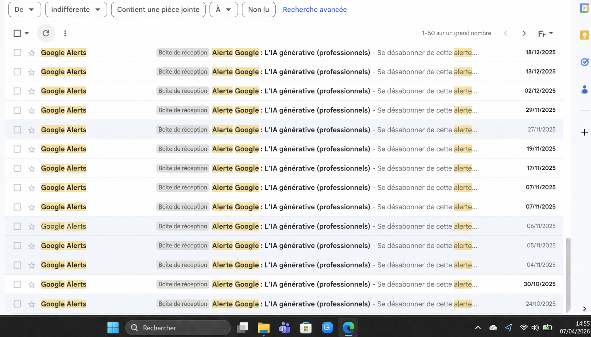

Ma veille technologique porte sur l’intelligence artificielle générative, une technologie en pleine expansion capable de créer automatiquement du contenu tel que du texte, des images, du code informatique ou encore du son.
Contrairement aux intelligences artificielles traditionnelles qui se contentent d’analyser et de traiter des données, l’IA générative est capable de produire de nouvelles informations originales. Cela représente une véritable révolution dans le domaine du numérique et du développement informatique.
L’IA générative transforme profondément le métier de développeur et les méthodes de travail. Elle permet notamment :
Par exemple, des outils d’IA peuvent générer du code en différents langages comme le PHP, le Java ou le SQL, ce qui est particulièrement utile dans le cadre de mon BTS SIO option SLAM.
Malgré ses nombreux avantages, l’IA générative présente également des limites qu’il est important de prendre en compte :
L’IA générative est de plus en plus utilisée dans les entreprises pour améliorer la productivité et innover plus rapidement. Elle permet de réduire les coûts, d’accélérer le développement de solutions et de faciliter la transformation numérique.
Cependant, elle modifie également les compétences attendues chez les développeurs. Il devient essentiel de savoir utiliser ces outils tout en gardant un esprit critique sur les résultats proposés.
Pour suivre l’évolution de cette technologie, j’utilise plusieurs sources fiables et variées :
Cette diversité de sources me permet d’avoir une vision globale et actualisée de l’évolution de l’intelligence artificielle générative.
Mon objectif est de comprendre les enjeux de l’IA générative et son impact dans le monde professionnel, mais aussi de savoir l’utiliser efficacement dans mes projets futurs.
En tant qu’étudiant en BTS SIO option SLAM, cette veille me permet de :
L’intelligence artificielle générative est une technologie incontournable qui transforme profondément le domaine de l’informatique.
Grâce à ma veille technologique, je peux mieux comprendre ses enjeux, ses avantages et ses limites, afin de l’intégrer de manière efficace et responsable dans mon futur métier de développeur.
